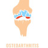

Osteoarthritis
اگه ریسک زخم گوارشی بالا و ریسک بیماری قلبی پایینی داره:
Cap Celecoxib (100; 200mg) N=60 q12h
داروی انتخابیه خوبیه با اینحال کنارش پنتوپرازول بدیم:
Tab pantoprazole 40mg N=60 daily
اگه ریسک بیماری قلبی بالا و ریسک گوارشی کمی داره. دیگه ندین. بجاش:
Tab Naproxen (250; 500mg) N=60 q12h
Tab Pantoprazole 40mg N=60 daily
1️⃣ بورسیت
2️⃣ تاندونیت
3️⃣ نقرس و نقرس کاذب
4️⃣ آرتریت روماتوئید
5️⃣ آرتریت پسوریاتیک
6️⃣ آرتریت reactive
7️⃣ آرتریت سپتیک
8️⃣ نکروز آوسکولار
9️⃣ آسیب های داخلی ( منیسک و ...)
🔟 تروما
1️⃣1️⃣ بیماری های نوروپاتیک
1️⃣2️⃣ بیماری لابم